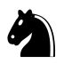

|
Tablero Ajedrez |
|
|---|
|
Tablero Ajedrez |
|
|---|
Descripción:El caballo es una de las piezas más únicas en el ajedrez debido a su movimiento especial en forma de "L" y su capacidad para saltar sobre otras piezas. |
 |
El caballo se mueve en forma de "L": Avanza dos casillas en una dirección (horizontal o vertical) y luego una casilla en dirección perpendicular, o viceversa. En total, combina un movimiento de dos casillas y uno de una casilla, formando siempre la forma característica de la "L".
El caballo es la única pieza que puede saltar sobre otras piezas (amigas o enemigas). Esto significa que no se ve bloqueado por piezas intermedias en su camino.
El caballo captura de la misma manera en que se mueve: aterrizando en una casilla ocupada por una pieza enemiga. No captura las piezas sobre las que salta, solo en la casilla donde termina su movimiento.
El caballo no puede moverse a una casilla ocupada por otra pieza amiga. Siempre cambia de color de casilla con cada movimiento (de clara a oscura, o viceversa).

| Regresar |
|---|